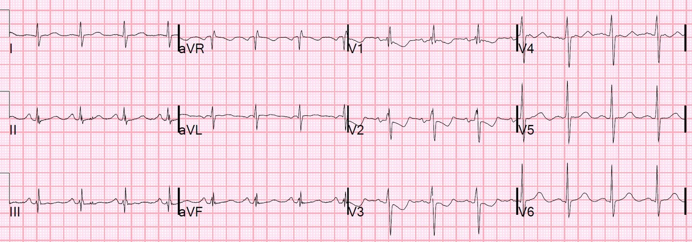
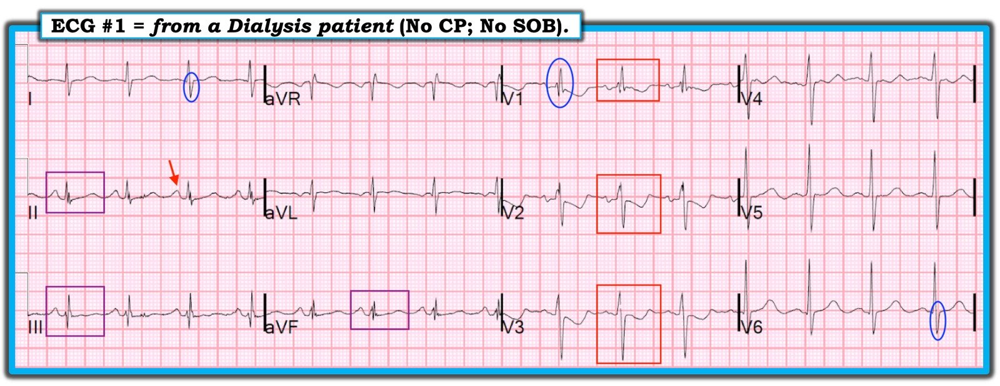

12/02/2019 — ST chênh xuống và sóng T đảo ngược ở V2 và V3.
Bản dịch tiếng Việt của bài "ST Depression and T-wave inversion in V2 and V3." – Dr. Smith’s ECG Blog. Giữ nguyên toàn bộ 4 hình ảnh của bản gốc.
Một bệnh nhân nam trung niên đang chạy thận nhân tạo được phát hiện trong tình trạng rối loạn tư duy (disorganized) và hoang tưởng (paranoid). Ông không đau ngực hay khó thở.
Một điện tâm đồ đã được ghi. Bác sĩ lâm sàng lo lắng về điện tâm đồ của bệnh nhân và đưa cho tôi xem:


Khi thấy điện tâm đồ này, tôi lập tức nhận ra phì đại thất phải (RVH) là nguyên nhân gây ST chênh xuống và sóng T đảo ngược ở các chuyển đạo V2 và V3. Nói cách khác, tôi chắc chắn rằng đây là một dấu hiệu mạn tính trên điện tâm đồ. Bác sĩ lâm sàng đang lo lắng cho biết không có điện tâm đồ cũ để so sánh, và cũng không có hồ sơ. Tôi vẫn chắc chắn đây là RVH vì các dấu hiệu là kinh điển: sóng R lớn ở V1, sóng S lớn ở chuyển đạo I, và ST-T điển hình ở các chuyển đạo trước tim phải, giống STEMI thành sau.
Nếu QRS bình thường và bệnh nhân có đau ngực, tôi đã nói đây là nhồi máu cơ tim thành sau, hoặc có thể là hạ kali máu (xem bài này: Are These Wellens’ Waves?? (Đây có phải là sóng Wellens??)).
Tuy nhiên, sau đó chúng tôi tìm thấy hồ sơ bằng văn bản từ một bệnh viện tuyến trước:
Kết quả đọc điện tâm đồ:
Nhịp xoang bình thường
Phì đại thất phải kèm bất thường tái cực
Bất thường sóng T không đặc hiệu
QT kéo dài
Điện tâm đồ bất thường
Không có thay đổi đáng kể so với 17-05-18
Siêu âm tim trước đây
Nhận định cuối cùng:
1. Kích thước thất trái bình thường, độ dày thành tăng vừa, chức năng tâm thu toàn bộ bình thường với EF ước tính 60 – 65%.
2. Kích thước buồng thất phải giãn nặng, chức năng tâm thu toàn bộ của thất phải giảm nặng.
3. Nhĩ phải giãn nặng.
4. Nhĩ trái giãn nhẹ.
5. Hở van ba lá nặng.
6. Áp lực phổi ước tính tăng nặng theo vận tốc dòng hở van ba lá và áp lực nhĩ phải (96 mmHg cộng RAP).
7. Tĩnh mạch chủ dưới giãn, biến thiên kích thước theo hô hấp dưới 50%, phù hợp với tăng áp lực nhĩ phải.
Điểm cần học:
Bất cứ khi nào có tái cực bất thường (ST-T bất thường), hãy tìm khử cực bất thường (QRS bất thường). Điều này có thể bao gồm RVH, LVH, LBBB, RBBB, IVCD, WPW, nhịp tạo nhịp và nhiều thứ khác. Nếu có, hãy đánh giá xem các bất thường ST-T có phù hợp với QRS bất thường hay không.
2. Hãy học thuộc hình ảnh này, vì nó là kinh điển của RVH. Dưới đây là một số ca khác về RVH, và/hoặc sóng R lớn ở V1, kèm bất thường ST-T:
Young Woman with history of repaired Tetralogy of Fallot presents with chest pain (Phụ nữ trẻ có tiền sử tứ chứng Fallot đã phẫu thuật sửa chữa đến khám vì đau ngực)
Chronic Right Ventricular Hypertrophy, or Acute Right Heart Strain? The ECG Helps Make the Diagnosis. (Phì đại thất phải mạn tính, hay tăng gánh tim phải cấp? Điện tâm đồ giúp đưa ra chẩn đoán.)
ST Depression and T-wave Inversions after ROSC from Resp and Cardiac Arrest after Head Trauma (ST chênh xuống và sóng T đảo ngược sau ROSC từ ngừng hô hấp và ngừng tim sau chấn thương đầu)
A 30-something woman with chest pain and h/o pulmonary hypertension due to chronic pulmonary emboli (Phụ nữ 30 mấy tuổi đau ngực, có tiền sử tăng áp phổi do thuyên tắc phổi mạn tính)
55 year old woman with chest pain and precordial T-wave Inversions (Phụ nữ 55 tuổi đau ngực và sóng T đảo ngược ở các chuyển đạo trước tim)
A 50-something male with Dyspnea (Nam giới 50 mấy tuổi khó thở)
Syncope, Hypotension, and a Large Right Ventricle — What is the ECG Diagnosis? (Ngất, hạ huyết áp và thất phải lớn — Chẩn đoán điện tâm đồ là gì?)
A large R-wave in lead V1. And why is the PR interval not short? (Sóng R lớn ở chuyển đạo V1. Và tại sao khoảng PR không ngắn?)

———————————————————–
Bình luận của KEN GRAUER, MD (12/2/2019):
———————————————————–
Một ca xuất sắc do Dr. Smith trình bày, xét từ góc độ giảng dạy điện tâm đồ. Để rõ ràng — tôi đã đánh dấu điện tâm đồ trong Hình 1.


==========================
Những điểm giảng dạy thú vị gây ấn tượng với tôi trong ca này bao gồm:
- Bệnh sử quan trọng biết bao! Như Dr. Smith đã nêu — việc người đàn ông trung niên này không đau ngực cũng không khó thở đã làm giảm mạnh khả năng có một biến cố tim hoặc phổi cấp, ngay cả trước khi nhìn vào điện tâm đồ. Tôi hẳn đã diễn giải bản ghi này rất khác nếu bệnh nhân đến khoa cấp cứu (ED) vì đau ngực dữ dội mới khởi phát hoặc khó thở mới xuất hiện.
- Thật hữu ích khi hồ sơ từ một bệnh viện tuyến trước có chứa bản diễn giải bằng văn bản về một điện tâm đồ trước đây của bệnh nhân này. Điều này gợi ý rằng ít nhất một số dấu hiệu có trên điện tâm đồ #1 (trong Hình 1) đã có từ trước. THẬN TRỌNG: Dù rõ ràng tốt hơn nhiều so với không có gì — theo kinh nghiệm của tôi, báo cáo bằng văn bản về các dấu hiệu điện tâm đồ (kể cả do bác sĩ tim mạch viết) KHÔNG THỂ thay thế cho việc tìm được một điện tâm đồ cũ thực sự trong hồ sơ bệnh án cũ. Nhiều lần đến mức không đếm xuể, tôi đã thấy những dấu hiệu điện tâm đồ quan trọng bị đọc thiếu hoặc đọc quá trong một báo cáo bằng văn bản trước đó. Bản ghi trong ca này (trong Hình 1) phức tạp. Theo tôi, cách duy nhất để biết liệu mọi dấu hiệu có phải đã cũ hay không là so sánh từng chuyển đạo với một điện tâm đồ trước đó.
- Việc có sẵn một báo cáo siêu âm tim trước đây có thể là một công cụ giảng dạy vô giá — đồng thời cũng tỏ ra cực kỳ hữu ích về mặt lâm sàng trong ca này. Việc tiếp cận được báo cáo siêu âm tim trước đây trong ca này bù đắp cho việc không có bản sao thực sự của điện tâm đồ cũ — bởi vì siêu âm tim trước đây xác nhận khả năng cao rằng các dấu hiệu điện tâm đồ trong ca này có lẽ không phải mới.
- Về việc dùng làm công cụ giảng dạy — siêu âm tim trước đây cho thấy lớn nhĩ phải (RAE) nặng, RVH nặng và áp lực tim phải tăng rõ — cũng như lớn nhĩ trái (LAE) nhẹ và thành thất trái dày mức độ vừa. Điện tâm đồ trong Hình 1 dự đoán từng dấu hiệu này tốt đến mức nào? (Xem bên dưới).
==========================
Điện tâm đồ trong Hình 1 cho thấy nhịp xoang tần số ~85/phút. Các dấu hiệu điện tâm đồ khác (cũng như những gì không thấy) mà tôi nhận thấy bao gồm:
- Không có dấu hiệu LAE hay RAE. Mặc dù sóng P xoang ở chuyển đạo II có kích thước khá (mũi tên ĐỎ) — nó không có khía (như thường gặp trong LAE), cũng không đủ cao hoặc đủ nhọn ở bất kỳ chuyển đạo dưới nào để đạt tiêu chuẩn RAE. Thành phần âm của sóng P ở chuyển đạo V1 không đủ sâu cũng không đủ rộng để đạt tiêu chuẩn LAE. Thành phần dương của sóng P ở các chuyển đạo V1 và V2 không cao cũng không nhọn, như có thể thấy trong RAE.
- Không có dấu hiệu LVH. Siêu âm tim cho thấy thành thất trái dày mức độ vừa. Dù độ nhạy của điện tâm đồ hạn chế trong việc phát hiện loại LVH này — tôi luôn thấy việc đối chiếu các dấu hiệu điện tâm đồ với đánh giá giải phẫu chính xác hơn nhiều mà siêu âm tim mang lại là rất bổ ích.
- Có RBBB không hoàn toàn. Tôi đo được độ rộng QRS trong khoảng 0.09-0.10 giây — nằm trong giới hạn bình thường. Có một phức bộ nhiều pha (rsR’s’) ở chuyển đạo V1 (trong hình bầu dục XANH ở V1) — kèm theo sóng S tận hẹp ở cả hai chuyển đạo I và V6 (trong các hình bầu dục XANH ở những chuyển đạo này). Điều này đạt tiêu chuẩn RBBB không hoàn toàn. Với RBBB hoàn toàn hay không hoàn toàn, thường cũng thấy phức bộ rsR’ ở chuyển đạo III, một chuyển đạo hướng về bên phải (như chúng ta thấy ở đây). Không thường gặp phức bộ QRS 4 pha (rsR’s’) ở chuyển đạo V1 do RBBB hoàn toàn hay không hoàn toàn đơn thuần. Dù vậy, tôi vẫn cho rằng hình thái QRS ở đây được mô tả phù hợp nhất là RBBB không hoàn toàn. LƯU Ý: Có thể thấy một mức ST-T chênh xuống nhất định ở các chuyển đạo trước khi có RBBB không hoàn toàn. Tuy nhiên, mức ST-T chênh xuống ở các chuyển đạo trước thấy ở đây rõ ràng nhiều hơn mức người ta có thể chờ đợi từ RBBB không hoàn toàn đơn thuần.
- Các dấu hiệu điện tâm đồ ủng hộ RVH trong Hình 1 gồm — sóng R’ tương đối cao ở chuyển đạo V1 — sự hiện diện của nhiều sóng S trên bản ghi này (tức là ở các chuyển đạo I, II, aVL; và từ V2 đến V6) — sự hiện diện của RBBB không hoàn toàn — và, ST-T chênh xuống ở các chuyển đạo V1-V3 phù hợp với “tăng gánh” thất phải (RV “strain”). Rõ ràng, phức bộ QRS không đủ rộng để đạt tiêu chuẩn RBBB hoàn toàn. Trong phần lớn các trường hợp RBBB không hoàn toàn — sóng lệch R’ ở chuyển đạo V1 không cao gần bằng như trong Hình 1, trừ khi còn có “điều gì khác” (tức là RVH).
- Các dấu hiệu điện tâm đồ không điển hình cho mức độ nặng nề của bất thường nhĩ phải (RAA), RVH và tăng áp lực tim phải mà siêu âm tim chỉ ra gồm: i) Không có dấu hiệu điện tâm đồ gợi ý RAA; và, ii) Không có bất kỳ gợi ý nào về “tăng gánh” thất phải ở các chuyển đạo dưới. 2 vùng chuyển đạo cần xem khi đánh giá “tăng gánh” thất phải là các chuyển đạo dưới (II,III,aVF) — và các chuyển đạo trước (V1,V2,V3). Dù đúng là “tăng gánh” thất phải không phải lúc nào cũng thấy ở cả hai vùng chuyển đạo này — việc hoàn toàn không có dấu hiệu ST-T chênh xuống ở các chuyển đạo dưới (trong các hình chữ nhật TÍM) và, hình ảnh ST-T chênh xuống ở các chuyển đạo trước có phần ít gặp hơn (trong các hình chữ nhật ĐỎ, cho thấy ST-T chênh xuống tối đa ở chuyển đạo V2, dù biên độ sóng R ở chuyển đạo này chỉ ở mức vừa phải) — với tôi gợi ý rằng ST-T chênh xuống ở các chuyển đạo trước có thể phản ánh bệnh lý tim hoặc phổi cấp. Tôi xin nhấn mạnh rằng bệnh sử không có đau ngực và khó thở + các bất thường rõ rệt trên siêu âm tim trước đây ủng hộ mạnh mẽ giả định rằng các dấu hiệu điện tâm đồ trong Hình 1 không phải là cấp tính. Ý của tôi đơn giản là tôi sẽ không hề chắc chắn về tính mạn tính của các dấu hiệu này nếu chỉ nhìn điện tâm đồ này mà không có bệnh sử và báo cáo siêu âm tim trước đây.
Chúng tôi xin CẢM ƠN Dr. Smith vì đã trình bày ca bệnh rất sâu sắc này.
==========================
XEM THÊM CHI TIẾT:
- Để xem “Quan điểm của tôi” về chẩn đoán RVH trên điện tâm đồ — BẤM VÀO ĐÂY.
- Để xem “Quan điểm của tôi” về chẩn đoán LAE & RAE trên điện tâm đồ — BẤM VÀO ĐÂY.